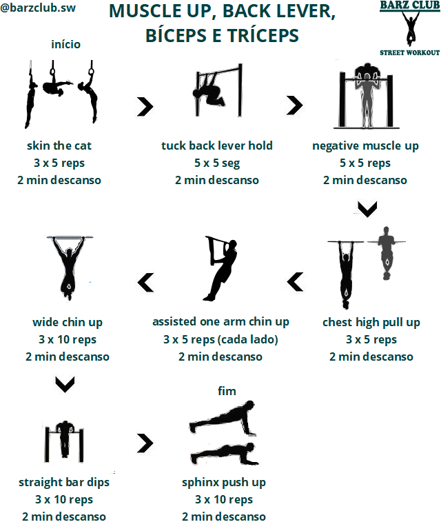

Tradutor
TradutorFala Calistênico! 😀
Hoje você vai saber como conciliar os Moves da Calistenia e a Hipertrofia numa única grade de treinos.
Prepare-se para começar a aprender skills como muscle up, front lever e planche, dentre outros, enquanto trabalha os músculos de forma completa pra ter um shape top.
Se liga ae!
COMO CONCILIAR MOVIMENTOS COM HIPERTROFIA
Os treinos do nível intermediário são compostos por 8 exercícios que combinam progressões para fazer moves como bandeira humana, back lever e muscle up com exercícios focados em hipertrofia, que trabalham os músculos deixados de lado nas progressões.
Para encarar um treino com essa dificuldade é necessário ter uma base sólida na Calistenia, ou seja, é preciso ter dominado os exercícios mais básicos, como barra, flexão e suas variações.
Por isso você deve fazer os treinos intermediários só depois de estar bem à vontade com o Programa de Treino Pré-Intermediário.
Lembrando que estas e todas as nossas outras grades de treinos são desenvolvidas numa parceria entre atletas especialistas em Calistenia e profissionais qualificados para garantir treinos eficientes e seguros para você.
O profissional de Educação Física Marcos Theodoro, com experiência em escolas militares, é o responsável técnico desse programa de treino e também o criador do canal de Youtube Extremamente Fitness e da conta de IG @canal_extremamentefitness, onde trata de atividades físicas em geral, desde yoga e calistenia até musculação e boxe. 😉
Confere ae os treinos!
1) TREINO DE PLANCHE, HANDSTAND, PEITO E TRÍCEPS INTERMEDIÁRIO
O treino começa com as progressões pro handstand e planche, seguidos de exercícios de fortalecimento destes exercícios.
Os demais são focados em trabalhar partes dos ombros e peitoral que não são bem trabalhados nas progressões.
*IMPORTANTE: Você deve fazer a quantidade de séries indicada para cada exercício com 2 minutos de descanso entre estas séries e só depois passar para o próximo exercício.
Abaixo seguem algumas considerações sobre cada exercício:
- Planche lean - é uma progressão pro planche onde você deve manter os braços totalmente esticados, as escápulas afastadas (hollow back), o tronco e as pernas alinhados e jogar o corpo pra frente até onde for possível segurar pelo tempo determinado.
- Wall handstand hold - uma progressão para a parada de mãos. Você deve apoiar os pés na parede com as costas viradas pra ela e manter os braços bem esticados. Conforme pegar mais confiança tente se equilibrar tirando aos poucos os pés da parede.
- Pseudo planche push up - fortalecimento pro planche. Faça a mesma posição do planche lean, mas em vez de segurar a posição, faça flexões.
- Wall handstand push up - fortalecimento pra parada de mãos. Comece da mesma posição do handstand hold e desça até a cabeça quase tocar o chão, esticando os braços completamente ao subir.
- Typewriter push up - este serve para trabalhar a parte medial dos deltoides, uma vez que a parte anterior dos ombros já foi bem trabalhada nos exercícios anteriores.
- Deep wide push up - nesta flexão aberta você deve posicionar as mãos em apoios um pouquinho altos, como parallettes, e descer até quase tocar o peitoral no chão. Pega a parte medial do peitoral e especialmente a parte mais externa.
- Decline push up e dips - pegam respectivamente a parte superior e inferior do peitoral.
Para saber mais sobre como trabalhar peitoral e ombros de forma completa basta conferir os artigos sobre Os Melhores Exercícios de Peitoral e Os Melhores Exercícios de Ombros.
2) TREINO DE FRONT LEVER, COSTAS E LOMBAR INTERMEDIÁRIO
Aqui começamos com as progressões pro front lever e finalizamos com os exercícios que vão complementar o treino, trabalhando as áreas restantes das costas como vemos no artigo Os Melhores Exercícios para Costas.
*IMPORTANTE: Você deve fazer a quantidade de séries indicada para cada exercício com 2 minutos de descanso entre estas séries e só depois passar para o próximo exercício.
Se liga nas informações sobre os exercícios:
- Tuck front lever hold - progressão pro front lever. Durante a execução os braços devem estar sempre esticados e a lombar sempre paralela ao chão.
- Tuck front lever raises - fortalecimento pro front. Deve-se tomar os mesmos cuidados do primeiro, só que agora você vai fazer repetições elevando e abaixando o tronco.
- Scapula pull up - fortalecimento pro front. Nesta versão da scapula pull up, além de jogar o tronco pra trás (abaixando os ombros) você deve puxar repetições, levando o peitoral na direção da barra. Também trabalha a hipertrofia das partes inferior e medial do trapézio e dos romboides.
- Dragon flag hold - fortalece a lombar para fazer o front lever. O tronco deve estar alinhado com as pernas ou com a cintura levemente para cima, mas nunca com a cintura para baixo. Segure o mais perto que conseguir do chão.
- Wide pull up - trabalha os dorsais, mais conhecidos como asas, visando a hipertrofia.
- Traps shrug - trabalha a parte superior do trapézio, o famoso trapézio descendente.
- Wide face pull up - pega a parte posterior dos ombros e toda a coifa rotadora, músculos importantes na estética das costas.
- Reverse leg raises - mais um exercício pra lombar, mas agora trabalhando os músculos num sentido diferente. Ele também é importante no fortalecimento pro planche e pro back lever.
3) TREINO DE PISTOL SQUAT, HUMAN FLAG, PERNAS E ABDÔMEN INTERMEDIÁRIO
Os 4 primeiros exercícios são progressões e fortalecimento para a bandeira humana e pro pistol squat, os demais complementam o fortalecimento das pernas e abdômen, visando a hipertrofia.
*IMPORTANTE: Você deve fazer a quantidade de séries indicada para cada exercício com 2 minutos de descanso entre estas séries e só depois passar para o próximo exercício.
Os exercícios são:
- Hanging human flag - uma progressão da bandeira humana. A pegada da mão de cima deve ser voltada pra frente enquanto a de baixo deve apontar para baixo. Com a mão de cima você vai puxar e com a de baixo empurrar, sustentando o peso do seu corpo nela. Os braços devem estar sempre esticados e os dois pés fora do chão.
- Windshield wipers - fortalece toda a parte lateral do seu tronco para fazer a bandeira humana.
- Assisted pistol squat - progressão para o pistol squat. Evite usar muito a força dos braços pra ajudar na subida. Mantenha a sola do pé totalmente colada ao chão durante todo o movimento. Desça até o final.
- Bulgarian squat - vai melhorar o seu equilíbrio e fortalecer suas pernas para fazer o pistol suqat.
- Sumo squat - os agachamentos anteriores já trabalham a parte frontal das coxas e este vem para trabalhar a parte interna delas. Os pés devem estar apontados para fora e com uma abertura maior que a largura dos ombros.
- One leg hamstring levers - trabalha a parte posterior das coxas. Foque em fazer força com as pernas e não com a lombar.
- One leg calf raises - trabalha as panturrilhas. Você deve descer até o calcanhar ficar abaixo do nível da ponta dos pés e subir até a panturrilha contrair ao máximo.
- Full leg raises - completa o fortalecimento do abdômen trabalhando o reto abdominal.

4) TREINO DE MUSCLE UP, BACK LEVER, BÍCEPS E TRÍCEPS INTERMEDIÁRIO

Esta rotina começa com as progressões para o back lever e muscle up e é complementada com exercícios visando a hipertrofia dos bíceps e tríceps, como vemos nos artigos Os Melhores Exercícios de Bíceps e Os Melhores Exercícios de Tríceps.
*IMPORTANTE: Você deve fazer a quantidade de séries indicada para cada exercício com 2 minutos de descanso entre estas séries e só depois passar para o próximo exercício.
Seguem as informações sobre cada exercício:
- Skin the cat - desenvolve a mobilidade dos ombros para fazer o back lever. Você deve começar pendurado na barra com as mãos voltadas para frente, passar as pernas por entre os braços, descer até esticar completamente os braços e fazer o movimento contrário para voltar à posição inicial.
- Back lever hold - progressão pro back lever. Os braços devem estar esticados e o tronco paralelo ao chão.
- Negative muscle up - progressão do muscle up. Pode ser feito numa barra baixa ou num dos lados da paralela. Suba na barra com impulso ou ajuda e desça bem devagar até esticar os braços completamente. Foque bastante em não cair direto na transição entre a parte de cima e a de baixo.
- Chest high pull up - é um fortalecimento pro muscle up. Puxe a barra com as mãos voltadas pra frente o mais alto que puder com o tronco afastado da barra.
- Assisted one arm chin up - além de fortalecer bíceps e braquial visando a hipertrofia, este exercício também é uma progressão para puxar a barra com um braço só. Faça a pegada com uma das mãos voltada para você e apoie a outra em um dos lados da barra ou num tecido pendurado nela para ajudar na puxada.
- Wide chin up - foco na hipertrofia da parte interna dos bíceps.
- Straight bar dips - trabalha a hipertrofia dos tríceps e também ajuda no muscle up.
- Sphinx push up - também foca na hipertrofia dos tríceps além de ajudar na transição da puxada para a empurrada no muscle up.
Agora é hora de ver como ficou a grade de treinos, se liga só!
GRADE DE TREINOS DE MOVES E HIPERTROFIA INTERMEDIÁRIO
A grade de treinos iniciantes é composta por 4 dias de treinos seguidos por um dia de descanso, repetindo novamente a sequência.
Se liga:
Se por acaso, mesmo após o descanso, os músculos a serem treinados no dia ainda estiverem muito doloridos, tire mais um dia para se recuperar antes de voltar aos treinos.
Também é importante cuidar da alimentação e do sono para uma boa recuperação muscular e hipertrofia.
E se durante os treinos você não conseguir fazer a quantidade de repetições ou tempo estipulados, não tem problema. Faça o máximo que conseguir e em breve estará fazendo o treino completo.
MUDANDO DE NÍVEL
Quando estiver completando todos os treinos sem dificuldades e for capaz de:
- Segurar a tuck planche por pelo menos 3 segundos;
- Segurar o handstand livre por pelo menos 3 segundos;
- Segurar o straddle front lever por pelo menos 3 segundos;
- Segurar a straddle human flag por pelo menos 3 segundos pra cada lado;
- Fazer pelo menos 3 pistol squats livres pra cada perna;
- Segurar o straddle back lever por pelo menos 3 segundos;
- Fazer pelo menos 2 muscle ups seguidos (não precisa ser limpo).
Então poderá passar para o Programa de Treino Pré-Avançado.
Calistênico, o post vai se encerrando por aqui, mas sua nova fase de treinos apenas começou. Comece agora os seus treinos de skills e hipertrofia intermediário e deixa aí nos comentários ou no nosso perfil @barzclub.sw no Instagram as suas dúvidas e o que está achando.
Abraço, tamo junto! 😁
~Equipe Barz Club

{kind=link}
{kind=link}
{kind=link}
{kind=link}
{kind=link}
{kind=link}
cara você diz aqui que devemos fazer com facilidade o treino pré intermediario para ir para esse, eu faço quase todos eles tranquilo só o de costa que ainda não consigo fazer 8 de todos alguns faço 8 outros 7 e outros 6, acha melhor continuar no pré intermediario ou já posso pular para esse?
ResponderExcluirFala mano! O treino intermediário tem mais exercícios, com maior dificuldade e mais repetições do que o pré-intermediário. por isso recomendo que você continue focado no pré-intermediário de costas e bíceps.
ExcluirVocê pode seguir a seguinte estratégia pra conseguir evoluir mais rápido nesse treino: quando não conseguir completar as repetições sugeridas, descanse um pouquinho e volte a fazer o restante pra completar.
Note que só estou recomendando isso porque você disse que consegue fazer 6 ou 7 reps de alguns exercícios. Como são números bem próximos do recomendado, dá pra você fazer isso sem correr risco de se lesionar.
Mas se você só conseguisse fazer 3 ou 4 reps, por exemplo, seria muito arriscado tentar essa estratégia porque correria o risco de ir muito além dos seus limites.
Seguindo essa estratégia no pré-intermediário de costas, em breve você estará dominando esse treino e terá força suficiente pra iniciar o intermediário de forma segura.
Tamo junto mano! Qualquer outra dúvida tamo ae. ;)
não tem muito a ver com esse treino, mas eu sempre tive uma dúvida, como eu combino hipertrofia e alongamento?
ExcluirFala ae! beleza? :)
ExcluirFaça o alongamento e o treino de hipertrofia em momentos diferentes do dia. Por exemplo: alongamento de manhã e hipertrofia a noite.
Mas nunca faça um logo em seguida do outro! ;)
Muito bom esses treinos.
ResponderExcluirPor quanto tempo posso mantê-los? 2 meses?
Vou começar a faze-los em breve com certeza!
Fala Fabio! Blz?
ExcluirNão existe um período de tempo padrão pra manter.
O objetivo maior desses treinos, é te permitir fazer os movimentos da calistenia (muscle up, parada de mão, etc.).
Portanto o tempo que o treino deve ser mantido é o tempo de desenvolver essas habilidades.
Essa não é uma jornada curta, mas é muito recompensadora em termos de força, habilidade e estética. :)
Fazer o treino nessa sequência mesmo do 1 ao 6?
ResponderExcluirNos três últimos treinos de técnica, os últimos exercícios complementares, fazer uma vez só o máximo de repetições?
Então Fabio, a sequência é essa, do 1 ao 6, conforme a tabela do programa semanal.
ExcluirEssa é a distribuição mais eficiente que eu encontrei, dando tempo de dos grupos musculares descansarem específicos entre um treino e outro.
Mas se você achar uma outra configuração que funcione melhor pra você, fique a vontade para adaptar.
Apenas considere os descansos dos grupos, evitando treinar o mesmo grupo vários dias seguidos.
Nos treinos de técnica, os exercícios complementares são apenas uma série do máximo mesmo.
Qualquer dúvida tamo ae. Abraço mano! :)
Muito bom. Você poderia montar alguns treinos com argolas?
ResponderExcluirFala Lucas! Blz mano?
ExcluirTreinos com argolas são poderosos pra construção de força.
Na verdade a maioria dos exercícios pode ser adaptado pra argolas, nesse programa mesmo você pode trocar a barra e a paralela pelas argolas em muitos exercícios. ;)
Você acabou de me dar duas grandes ideias, a primeira é fazer um artigo mostrando como adaptar certos exercícios pras argolas.
A segunda é trocar a barra pelas argolas nos meus treinos pessoais por um tempo pra elevar o nível e desenvolver ainda mais força.
Valeu pelos insights mano, qualquer outra sugestão ou dúvida tamo ae. Grande abraço Lucas! :D
10 séries 3reps 2m descanso esse 2m descanso seria entre as repetições ou entre as séries?
ResponderExcluirFala mano! Tudo certo?
ExcluirO descanso é entre as séries mesmo.
As repetições são seguidas, como num treino normal. ;)
Qualquer outra dúvida tamo ae. Abraço. :)
Conheci seu site hoje.
ResponderExcluirUsei durante uma ano e meio um aplicativo de HIIT, porém eu não quero ter que depender dele pro resto da minha vida, então resolvi buscar pela net como fazer um plano de treino e achei seu site.
Já te digo que irei seguir seus planos de treinos (com adaptações mínimas).
Obrigado por compartilhar seu conhecimento.
Fala Wagner!
ExcluirSeja bem-vindo :D
É sempre bom variar os treinos e consultar novas fontes de conhecimento e as adaptações são importantes pra adequar o treino à sua realidade.
Tamo junto e no que precisar é só chamar. Abraço! :)
Dae Everton!!
ResponderExcluirE as camisetas do barz club??
Quando vamos ter??
Abraço!
Fala Fabio! Tudo certo mano?
ExcluirEsse ano priorizamos a melhora dos conteúdos que trazemos pra vcs com o lançamento do ebook e a reestruturação do site.
E tem mais conteúdo bom vindo por aí, por isso não temos previsão pra lançar as camisas, mas elas vão sair ;)
Tamo junto mano, abraço!
Eu comprei elásticos resistentes para aprender o muscle up. Como você remomenda encaixar o uso deles no treino? Faço apenas com eles ou complemento ao treino?
ResponderExcluirWagner, você pode usar no treino de habilidade pra ajudar a subir na barra pra fazer o muscle up negativo ou para substituir o muscle up com salto.
ExcluirA propósito, a dificuldade do muscle up com elástico estaria entre o negativo e o com salto.
Ewerton, e o cárdio, não se encaixa no intermediário?
ResponderExcluirFala Wagner, esse programa tem o foco em aprender 6 habilidades da calistenia, por conta disso adicionar cardio deixaria os treinos muito longos.
ExcluirMas nada impede que você adapte o programa e adicione o cardio em algum dos dias ou até mesmo no final de cada treino. ;)
So faltou as progressoes da full plance que a q eu mais quero fazer tem como vc passar pra mim?
ResponderExcluirEae Julio! Beleza?
ExcluirMano, eu ainda to aprendendo esse, por enquanto só consigo o straddle planche. Depois que eu aprender o full planche na moral eu posto aqui o treino pra vocês.
Mas segue abaixo dicas de exercícios que me ajudaram bastante a evoluir no planche até aqui:
- pseudo planche push up
- planche lean
- hindu push up
- superman hold
Tamo junto!
Cara nessa progressões human flag é para fazer dos dois lados, devo fazer 10 séries um lado e depois 10 do outro ou devo intercalar? 1 série 1 lado 2 série outro lado....?
ResponderExcluirFala mano, beleza? :D
ExcluirConta uma série quando você fizer uma vez pra direita e uma vez pra esquerda.
No total você acaba fazendo 10 bandeiras pra cada lado.
Eu prefiro fazer intercalando, porque assim evito fadigar de uma vez um dos lados, o que pode atrapalhar o desempenho ao fazer pro outro lado.
Abraço mano, tmj!
Ei Everton não teria um advanced tuck back lever aí? Pois o tuch seguro uns 20seg tranquilo mas pra ir pro stradle aí não vai nem 1sec kkk
ResponderExcluirFala mano, blz? :D
ExcluirCabe sim um advanced tuck aí.
É importante ir encaixando cada vez mais a lombar, deixando as costas retas, assim vc fortalece a lombar pra segurar o straddle.
Tmj mano! ;)
Nos treinos não tem nenhum L-sit ou Ponte. Em que dias eu poderia encaixar esses dois? De core e pernas? Gosto de fazer eles e estou tentando aprender o V-sit por agora, além dos que já estão nos treinos.
ResponderExcluirFala Júnior! Tudo certo?
ExcluirExatamente mano, você pode encaixar esses dois no treino de core e pernas. A ponte inclusive será um plus no fortalecimento pro front. :)
Você pode até encaixar umas progressões pro v-sit no treino de front e back ou no de bandeira e pistol. ;)
Valeu Júnior, tmj!
Fala Everton tô aq dnovo kkk no treino muscle up quando não consigo mais fazer o muscle eu subo no jumping e desço no negativo 3 de cada pode ser assim?
ResponderExcluirFala mano! :D
ExcluirPode ser sim. Jumping + negativo é o melhor jeito de conquistar o primeiro muscle ou aumentar o número de repetições seguidas. ;)
Tmj mano!
eai parceiro. me tira umas duvidas por favor. por que não tem progressão com 1 perna no front lever? outra duvida, alguém ja testou essa rotina de treino e conseguiu aprender todos esses movimentos de uma vez? não seria de repente interessante fazer uma rotina com 1 movimento apenas por treino? pessoa aprende aquele move ali no prazo de uns 3 mesês depois troca rotina para o próximo? abraço everton
ResponderExcluirFala mano! :D
ExcluirBora por partes:
1) Não tem progressão com 1 perna, pq pela minha experiência e até pelo que já vi de outros calistênicos essa progressão não é tão eficiente assim, porque o modo que ela trabalha a lombar é bem diferente do movimento real. O advanced tuck e o straddle são bem melhores nesse quesito. Portanto o one leg front é uma progressão que atrasaria a sua evolução, podendo ser pulada sem prejuízo algum, indo do advanced tuck direto pro straddle.
2) Essa rotina é baseada na que eu fazia pra pegar esses movimentos, e consegui pegar todos treinando nesses moldes, assim como uns amigos que seguiram essa rotina também conseguiram. Esta e todas as outras rotinas daqui são baseadas em tudo que já aprendi e testei sobre calistenia. ;)
3) É possível fazer mais de um movimento por treino sem perder nada, porque os movimentos se complementam, mas se você preferir focar apenas em 1, fique à vontade pra fazer isso. Esse programa funcionou pra mim e pra outras pessoas, mas talvez pra você funcione melhor com alguns ajustes.
O importante é testar. Faça ajustes e veja a melhor estratégia pra você. Mas pode ter certeza que se seguir do jeito que está no programa, vai alcançar os resultados que deseja. :)
Abraço mano!
Show Everton vlw pelas informações mano vou continuar com o treino aí q já foi testado kk mais garantido. Espero aprender todos eles logo forte abraço mano
ExcluirTamo junto mano! :)
ExcluirQualquer dúvida tamo ae.
Bons treinos brother! Depois conta como tá sendo a evolução. ;)
top
ResponderExcluirTmj Gwarn! :D
ExcluirOpa tudo bom?
ResponderExcluirEu to querendo trocar a pistol squat pela full plance tem como vc me passar as progressoes dela ai fazer o favor
Fala Julio, beleza?
ExcluirEu ainda não domino a full planche, apenas a straddle planche, por isso vou te passar os exercícios que me ajudaram a chegar nesse nível.
- Planche lean (10 reps)
- Pseudo planche push up (10 reps)
- Superman hold (30 seg)
- Tuck planche (10 tentaivas) ou Tuck planche avançado (10 tentativas) caso já consiga fazer este.
Caso tenha alguma dúvida em como se executa os exercícios, é só jogar o nome deles no google que vai aparecer vídeos com a execução correta. ;)
Tamo junto Julio! :D
Quanto de descanso entre os exercícios
ResponderExcluirFala ae, beleza? :)
ExcluirSão 2 minutos, assim como entre as séries do mesmo exercício.
Mas se sentir que precisa de mais tempo, principalmente entre os exercícios de progressão, não tem problema, descanse mais 1 ou 2 minutos até se sentir preparado.
Qualquer outra dúvida é só falar, tmj!
Everton e se a pessoa estiver num nível maior do movimento? Já consiga fazer todos eles dá para trocar a progressão básica aí do treino pelo movimento em si? E continuar os demais?
ResponderExcluirFala Ander! :D
ExcluirDá sim, inclusive é até recomendado. Nesse caso o seu objetivo será aprimorar ainda mais o movimento. ;)
Tmj!
Eu posso fazer os exercícios até a falha??
ResponderExcluirFala ae, tudo certo? 🙂
ExcluirDepende do exercício.
Os exercícios progressivos pros movimentos não devem ser até a falha. O intuito deles é que você faça mais séries focando na qualidade da execução, por isso a falha não é recomendada, pra não perder qualidade devido ao cansaço. 😉
Nos outros pode chegar perto da falha, já que o objetivo deles é fortalecimento e/ou hipertrofia tbm.
Qualquer outra dúvida é só falar. Tmj! 😁
Treinar vários movimentos juntos não atrapalha não ?
ResponderExcluirNão seria melhor ficar em pelo menos em 3
Fala mano, beleza? 🙂
ExcluirNão tem problema em treinar vários movimentos na mesma grade, ainda mais que são progressões e fortalecimentos combinados com treinos focados em grupos musculares específicos, então mesmo quem não quer pegar os moves vai se beneficiar das progressões. 🙂
A questão é que vai demorar mais pra você dominar certo movimento, porque que vai levar pelo menos 4 dias pra treinar ele novamente.
Se você quiser focar em menos moves também não tem problema, os treinos são genéricos e podem e devem ser adaptados para os objetivos e circunstâncias de cada um. 😉
É só manter a coerência entre o movimento trabalhado e os grupos musculares pra dar descanso suficiente pros músculos alvos.
Mas me diz aí, se você fosse focar em apenas 3, quais seriam? 🙂
Tmj mano!
Eu tô quase pegando o front
ExcluirEstou no 1leg a stradle planche e o v-sit
Muito bom brother! 😁
ExcluirSe você for focar só nesses 3, sugiro fazer o front nos dias de costas/lombar e bíceps/tríceps; o planche e o v-sit podem se encaixar nos dias de peito/ombros e pernas/abs.
Também sugiro fazer o straddle front lever como evolução do one leg, ele é um pouco mais difícil e você pode regular fechando as pernas conforme ganhar mais força. 🙂
Tmj mano!
Queria só saber se o treino é para ser feito como um circuito ou como séries? Pq eu não entendi muito bem se descanso 2mn entre cada exercício ou faço um circuito e então descanso.
ResponderExcluirOutra pergunta tem treino para mulheres também ?
Fala aí, tudo bem? 🙂
ExcluirO treino é feito em séries com 2 min de descanso entre as séries de cada exercício e 2 min de descanso na transição de um exercício pro outro. 😉
Não existe distinção entre treino para homens e mulheres, todos os nossos treinos podem ser feitos por ambos os sexos.
Nós dividimos apenas por nível de evolução. 🙂
Se você quiser um treino com um nível de dificuldade menor é só dar uma olhada no link abaixo, lá tem programas de treino desde o nível básico, pra quem ainda não faz barra ou flexão, até o nível mais avançado. 😉
https://www.barzclub.net/p/tabelas-semanais-de-treino.html?m=1
Grande abraço!
Opa, tudo bem?
ResponderExcluirCurti o site e vou dar início nesse projeto. O que mais me chama atenção é poder treinar em casa e a grande evolução de quem prática esse esporte. Tenho pouco tempo disponível e geralmente treino em casa com elásticos, visto que as academias estão fechadas (fazia musculação antes da pandemia). Pois bem, eu trabalho das 6 as 18 e depois tenho faculdade das 7 as 22:40. E eu trabalho numa escala 2x2, ou seja trabalho dois dias sim, dois não. Então tenho tempo para treinar somente nos dias que estou de folga, como eu posso fazer para dividir o treino? Faço dois grupos em cada dia? E no caso iniciantes que são divididos em três dias? Além disso posso continuar treinando com elásticos ou não é aconselhável?
Agradeço desde já ☺️
Fala Henrique, beleza? 🙂
ExcluirSua rotina é realmemte puxada, mas sempre é possível adaptar os programas.
A alternativa de fazer 2 treinos nos dias de folga parece a melhor opção mesmo.
No caso dos programas com 3 treinos, você pode fazer 2 no primeiro dia, que vai estar mais descansado, e o outro no segundo dia.
Indico fazer barra e pernas/core no primeiro e flexão no segundo.
Quanto aos elásticos, eles podem ser um upgrade dentro do treino de calistenia com exercícios complementares. 😉
Boa sorte no projeto Henrique. Tmj! 🙂
Como evoluir pra próxima progressão da cada habilidade? Exemplo: já faço 5x5 do tuck back lever hold. E depois? Pesquisar próxima progressão e encaixar no treino? Acho que farei isso. Parabéns pelo plano, ficou bom!
ResponderExcluirFala Wagner! 🙂
ExcluirVocê pode passar pra progressão advanced tuck back lever, onde os joelhos continuam dobrados mas as coxas fazem um ângulo de 90° com o tronco.
Mas o ideal mesmo é passar pro nível avançado que estamos preparando pra postar. 😁
Qualquer outra dúvida é só falar!
Olá! Como eu poderia encaixar um treino de HIIT? Pretendo seguir esse seu plano mas sem abandonar o cárdio. Obrigado!
ResponderExcluirFala aí, tudo certo? 🙂
ExcluirIsso depende de quantas vezes na semana você faz cardio.
Se for 3 vezes, seria legal encaixar no dia de treino de planche e no dia de pistol squat.
Daí você pode fazer o HIIT num horário diferente da calistenia ou após o treino de força. 😉
Que site maneiro irmão. Estou atrás da full planche, estava fazendo ela um dia sim e outro não...tipo as progressões, no maximo faço uma tuck mais ou menos. Minha dúvida é com essa grade de treino seguida com dedicação, alimentação e descanso, quanto tempo demoraria pra conseguir progressões mais avançadas do movimento, tipo a planche strande...ou o full back lever?
ResponderExcluirFala Elton! Tudo certo? 🙂
ExcluirPrimeiramente parabéns pelo pensamento sobre dedicação, alimentação e descanso, estes são os pilares da evolução física!
Esta grade representa só o início do caminho pros exercícios mais avançados, estamos no processo de montagem do próximo nível que contém os treinos pra pegar justamente a straddle planche e o full back lever, dentre outros exercícios. 🙂
Sobre o tempo de evolução, ele varia de pessoa pra pessoa, mas pode considerar uns 6 meses pro back lever e 1 ano pra straddle planche.
Pode ser que você consiga em menos tempo, mas estas são estimativas mais realistas.
Mas tenha em mente que o caminho até a conquista destes exercícios é muito gostoso de ser trilhado com ótimos exercícios de fortalecimento e progressão, então curta a jornada tanto quanto a recompensa. 😉
Abraço Elton, qualquer dúvida tamo ae!
Que massa man, previsão para treino avançado?
ResponderExcluirFala ae! 😁
ExcluirJá era pra ter saído, mas tá quase pronto, esse mês sai! 🙌
Nao tem plano de treino a cima do intermédio?
ResponderExcluirFala ae! 🙂
ExcluirDesculpe a demora.
O plano pré-avançado ta saindo do forno, este mês devemos lançar aqui no site no perfil @barzclub.sw no instagram. 😉
E dito que para o corpo ganhar força devemos fazer no entre 6 reps de um exercicio, sendo que passou de 6 reps ja se torna um treino de resistencia, como progredir apos isso?
ResponderExcluirFala aí, tudo certo? 🙂
ExcluirDeve-se tomar cuidado com essa regra.
Não são 6 repetições de um exercício normal, são 6 repetições de um exercício difícil ou com peso extra, que exija bastante esforço dos músculos.
Daí a pra progredir, ou você aumenta a dificuldade do exercício ou aumenta o peso extra. 😉
TRABALHO EXCELENTE DESENVOLVIDO POR VOCÊS AQUI DO SITE. PARABÉNS!
ResponderExcluirValeu Rodrigo! 😁
ExcluirTamo junto! 🙂👊
So tenho sabado e domingo ppsso fazer duas rotinas em cada um desses dias
ResponderExcluirFala ae, tranquilo? :)
ExcluirSendo sincero, é melhor treinar 2 dias na semana do que nenhum, mas não espere grandes resultados.
Treinar só sábado e domingo e ficar de segunda a sexta sem trabalhar os músculos não vai te ajudar a evoluir muito.
O ideal seria conseguir pelo menos mais 2 dias no meio da semana pra treinar pelo menos meia hora. ;)
Assim você poderia treinar quarta, quinta, sábado e domingo, descansando segunda, terça e sexta.
Cara, comecei nessa semana a montar minha própria rotina semanal (antes usava um app de calistenia). Como não quero treinar nos fds, pus de seg à sex. Respectivamente, ficou: front lever, planche/handstand, pistol, muscle up e full body. Com apenas 4 exercícios por dia, sendo 3 séries de cada. No full body (sexta) é claro que ficou com mais exercícios. O que acha? Abraço e parabéns pelo site!
ResponderExcluirFala mano! Beleza? :)
ExcluirÉ uma boa forma de dividir, mas só testando na prática pra ver se é ideal. Só toma cuidado no full body pra pegar mais leve nos exercícios de costas e tríceps, já que muscle up é no dia anterior.
Uma alternativa a esta divisão é juntar alguns treinos, se você tiver tempo de fazer mais do que 4 exercícios por dia. Nesse caso ficaria assim:
- Seg: Planche e handstand
- Ter: Front lever e muscle up
- Qua: Pistol squat
- Qui: (escolher um move da segunda e outro da terça, aconselho planche e front lever, que são os mais difíceis de pegar e requerem mais treino)
- Sex: Pistol squat
Coloquei planche e handstand na segunda, porque a fadiga do muscle up pode atrapalhar no treino de planche que é mais difícil de pegar, mas você pode deixar na outra ordem se preferir.
Desse jeito a divisão fica mais ou menos no formato puxar/empurrar/pernas/puxar e empurrar/pernas, trabalhando os diferentes grupos musculares pelo menos 2 vezes na semana.
No geral mano, continue estudando e testando variações de treino sempre buscando o melhor pra você. Depois me diz como ficou a divisão final e se está dando certo.
Grande abraço e bons treinos! :D
Muito bom. Seria legal artigos sobre aquecimentos ou receitas para montar um treino próprio (eu não sei montar nada).
ResponderExcluirÓtimas recomendações! 😁
ExcluirO de como montar um treino já tá até na lista. 🙂
Grande abraço!
Fala mano blz!!!
ResponderExcluirAtualmente treino uma rotina semelhante a essas, mas estou mudando para fazer 3 dias exclusivo para fortalecimento dos músculos incluídos em Mov e outros 2 dias exclusivo para movimentos.ja experimentou essa? Acha uma boa tbm?
Fala mano! Desculpe a demora em responder.
ExcluirNunca fiz uma divisão assim, mas pode ser uma boa desde que você não trabalhe os mesmos grupos musculares dois dias seguidos.
Pessoalmente prefiro trabalhar os movimentos e o fortalecimento no mesmo dia, fazendo primeiro os moves e no final o fortalecimento pra aquele move.
Desse jeito posso fazer num dia movimento e fortalecimento focado nos grupos musculares de empurrar e no outro os grupos musculares de puxar, evitando trabalhar de forma intensa as mesmas musculaturas.
Mas no final vale a pena seguir o que fizer mais sentido pra você. ;)
E ai, fez essa divisão, curtiu ela? Tmj mano!
Fala mano, sobre o treino de empurrar, depois do treino posso adiciona mais repetições e variações de flexão? Eu tenho medo de perder resistência e sinto que o volume de treino do treino de empurrar não está sendo o suficiente, e tbm só consigo fazer a handstand push up descansado no meio do treino fica muito pesado, posso substituir pra fazer o dobro de flexões Pyke ou só aumento o descanso ?
ResponderExcluirSobre o treino de puxar a mesma coisa, eu posso aumentar o volume das barras, tipo botar 5x8 de barra aberta e 5x8 de barra normal ? Novamente por questão de volume no treino
E o treino de muscle up, eu não consigo fazer a extensão de tríceps, só faço a negativa, como faço pra progredir e conseguir fazer-las?
Fala ae! Beleza? 🙂
ExcluirBora responder por partes:
- Você pode sim adicionar mais variações de push up no final, mas recomendo também testar aumentar a quantidade de repetições nas séries do treino (15 a 20 por exemplo) e/ou diminuir o tempo de descanso pra 1 min. Isso vai te ajudar a ter mais volume de treino sem precisar adicionar mais exercícios.
- Você não precisa fazer todas as reps de handstand push up logo de cara. Comece fazendo quantas você aguentar, mesmo que seja só uma ou duas, com o tempo você vai ganhar força e resistência pra fazer mais. Outra opção é trocar a ordem desse exercício com o handstand hold, assim você vai estar menos desgastado quando fizer o hspu. 😉
- Sobre a barra, é uma boa fazer 5 series como você colocou. Outra opção é adicionar peso extra.
- A progressão pra sphinx push up é colocar as mãos a frente da linha da cabeça, assim o exercício fica mais leve. Com o tempo você coloca as mãos cada vez mais pra trás, até chegar na direção da linha dos ombros. Mas se mesmo colocando as mãos mais a frente você não conseguir fazer, pode tentar apoiar as mãos numa superfície mais alta.
Qualquer outra dúvida é só falar! Tmj! 😁
Obrigado irmão
ExcluirBoa taarde, eu estou um pouco perdido na questão de treinar pra ganhar força/fazer movimentos, como seria um treino regrado pra isso? é pq não entendi mt bem, se faz os exercícios em séries e primeiro começar fazendo os movimentos só pra entender a técnica e dps finalizar com treino de força voltado a um movi específico
ResponderExcluirFala ae Edu, tudo certo?
ExcluirEm todos os exercícios apresentados aqui você precisa fazer o numero de series determinadas antes de passar pro próximo.
Os primeiros exercícios de cada treino são progressões dos moves a serem conquistados (uma variação mais fácil dos objetivos finais), é importante fazer as progressões primeiro para executa-las com o máximo de qualidade possível.
O restante dos exercícios são focados no fortalecimento das musculaturas necessárias para realizar os moves. ;)
Obrigado pela explicação!
Excluirnossa eu tô MUITO animado pra começar esses treinos amanhã eu finalmente me sinto seguro
ResponderExcluirEste comentário foi removido pelo autor.
ResponderExcluirA tabela de treino e de segunda até domingo?
ResponderExcluirEU POSSO MUDAR OS EXECICIOS DE LUGAR OU TEM QUE SEGUIR CERTINHO ?
ResponderExcluirQuanto tempo de descanso de uma repetição para outra
ResponderExcluirTenho uma dúvida os treinos são em circuito ou em séries?
ResponderExcluirBlz ? Treinar em circuitos um exercício seguido do outro ou em séries ? Acabar 3 séries do 1 exer e 3 do 2 e assim por diante ?
ResponderExcluirMaterial EXCELENTE !!!! Vamos fazer um eBook, ou instalar o Google Adsense aqui. Me chama no WhatsApp.
ResponderExcluir